Government Restrictions
- Korea Limitation Order
-
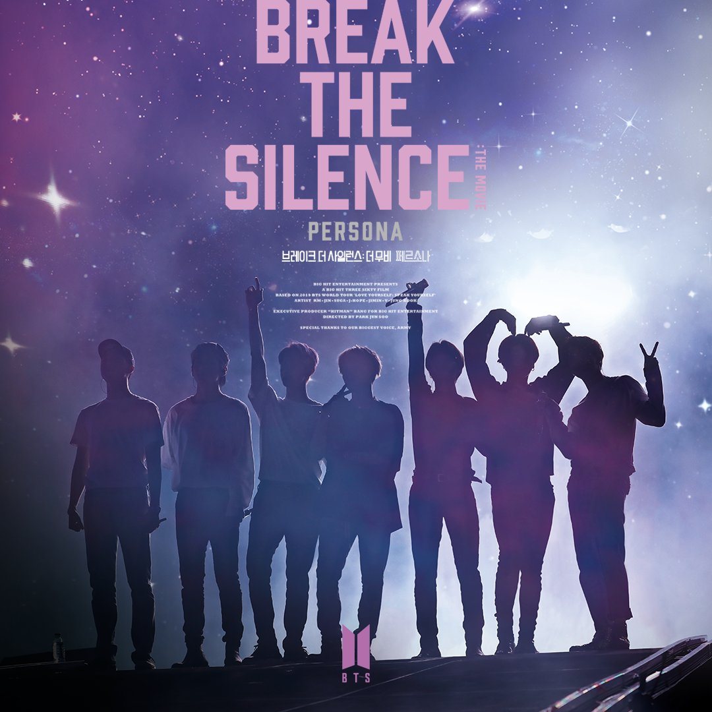Before 2016, the Chinese government was open to Korean entertainment, with Korean idols regularly coming to China to hold events and concerts and interact with Chinese fans, and people could see Korean dramas, movies and variety shows on various Chinese platforms. But with the deployment of the THAAD system, the Chinese government's measures to restrict South Korean artists and programs are in full swing. The ban by the government includes: prohibiting Korean stars from performing in China; stopping investment in new Korean cultural industry companies; stopping Korean idol groups from performing for more than 10,000 audiences; prohibiting newly signed Korean TV dramas and variety show cooperation projects; etc. All the prohibitions required to be implemented start on September 1, 2016, and this prohibition is called Korea Limitation Order. In addition, due to the emergence of the Korea Limitation Order, information, comments, and texts about Korean social media have gradually begun to be controlled.
- Fan Club Blocktion
-
In China, social media and news are linked to the government, and the government calls on idols to create positive images and help teenagers develop correct values. As one of the main social media in China, Weibo, a large number of fans will get information about idols and organize activities from here. While ARMY was raising funds for Jimin's 26th birthday, a large amount of campaign funds ($360,000) was raised in a short period of time on Weibo, and a custom plane was also custom-built as part of his 26th birthday celebration. Due to the large amount of funds, Weibo banned the ARMY fan club for 60 days on the grounds of illegal fundraising and controlled comments, posts, and fan clubs about BTS on Weibo. In addition, because social media is linked to the government and connected with the government, any bad speech or information against the government will be controlled and deleted directly. When RM posted a post on Instagram to support the South Korean Olympian Hwang Dae Heon, the move faced backlash on Chinese social media. Because this behavior is in conflict with national interests, the government has once again implemented stricter comment control and deletion of information on Chinese social media, such as Weibo (a lot of posts and ARMY fan clubs about RM get deleted).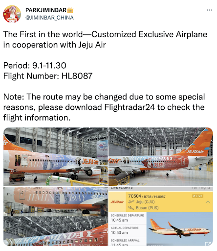
- Underground Activity
-
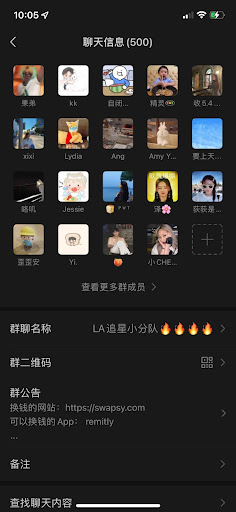Due to the government's varying degrees of control and deletion of Korean fan clubs and speeches, more and more ARMY choose to use other private social platforms and media to communicate, such as WeChat. In WeChat, fans have created lots of group chats one after another through communication and contact with each other, helping fans to establish connections and carry out some activities at the same time. In these group chats, ARMY will do photo sharing, selling and switching BTS peripheral products, sharing information, organizing ARMY activities, etc. Although in public social media, ARMY is often unable to carry out some activities publicly and post information, this has not stopped ARMY from supporting BTS's pace and enthusiasm, and they are still trying their best to use their ways to support BTS.
- What is Weibo?
- Sina Weibo is a Chinese microblogging website, and it is one of the biggest social media platforms in China.
- The initial users were celebrities and progressed into a platform where many media personalities, government departments, businesses and NGOs also opened accounts for posting and exchanging information.
- Weibo's role in fandom
- After regulation. Weibo still serves its role as a community and a source of information. Many public accounts or private accounts are very active on this platform. Especially for the fandom community, Weibo plays an essential role in connecting people and supporting its activities.
-
Community
The first role of Twitter is that it is a community, and each fan can create their own community. It's a place for fans to share any news about their idols, like the albums they buy, the drawings they do. So basically it's a place that holds everything.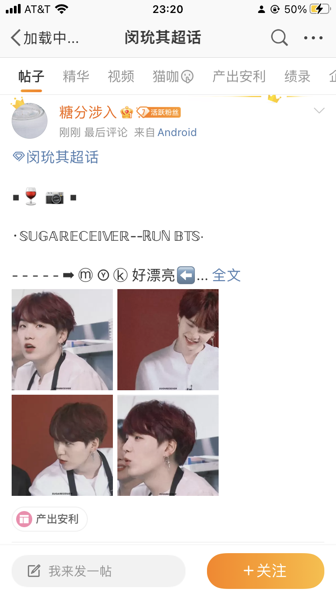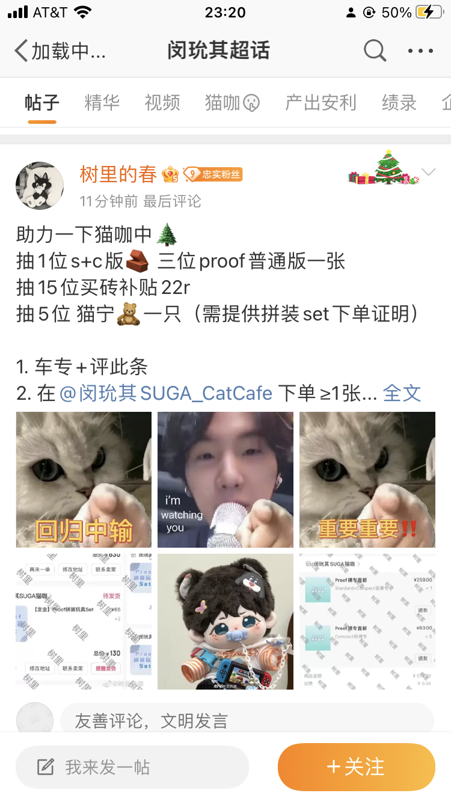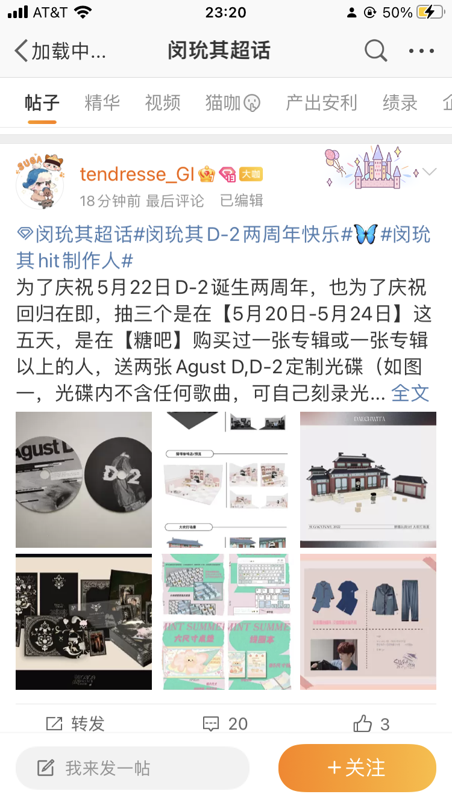 -
Content Handling
Next, since you can't use twitter, facebook or instagram in China, Weibo also plays an important role in delivering posts or messages related to idols on these social media to fans in China with translation. As you can see, tweets from Suga'instagram and weverse are re-posted here. Therefore, it helps Chinese fans to know the latest activities of their idols. This job, however, is usually done by Fan Bars, the largest idol fan groups in China. And each idol has its own Fan Bar on Weibo.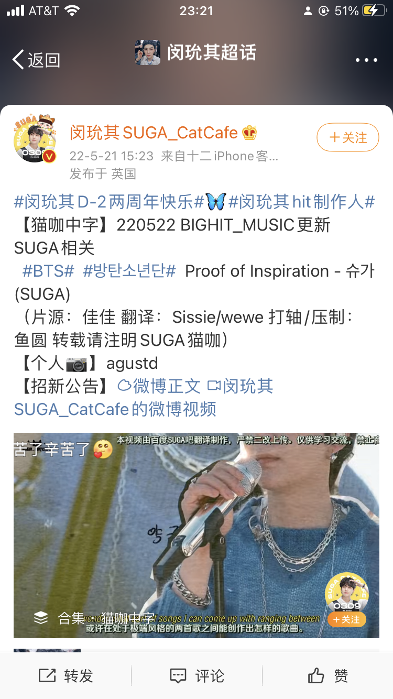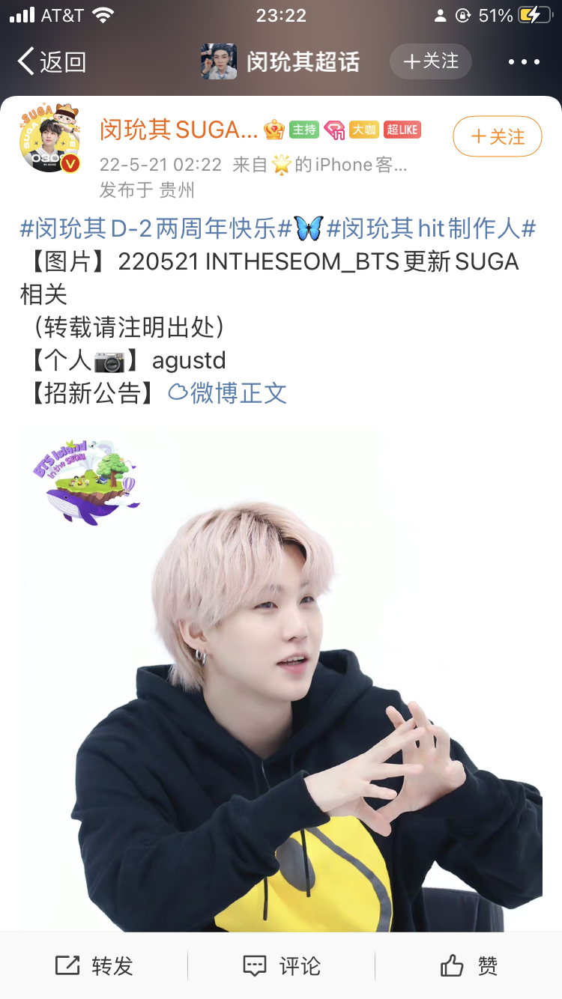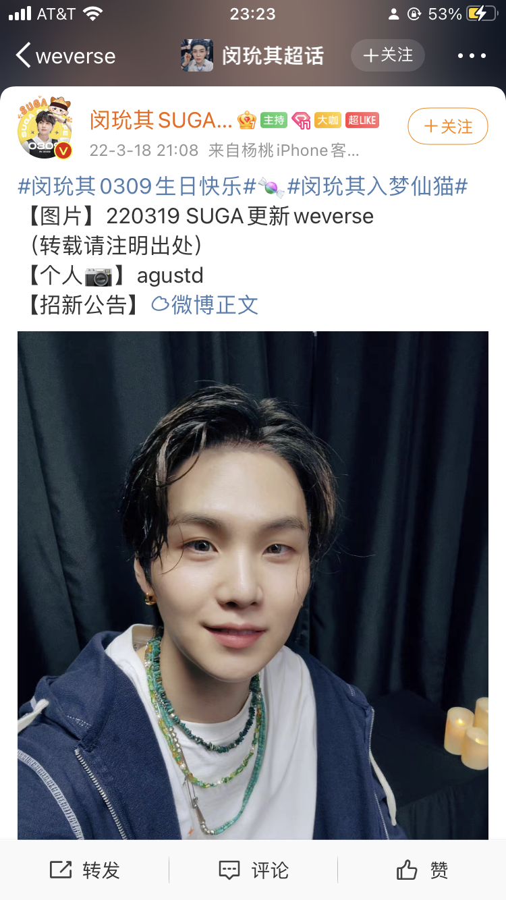 -
Activity Planning
While much of the fundraising process has gone underground, pillar accounts or fan bars can still raise money by selling merchandise through Twitter. And the Birthday Project has shifted its focus from buying advertising products to charity events. There are also smaller-scale activities, such as increasing the number of views of music videos or retweeting certain hashtags to generate trends on Weibo.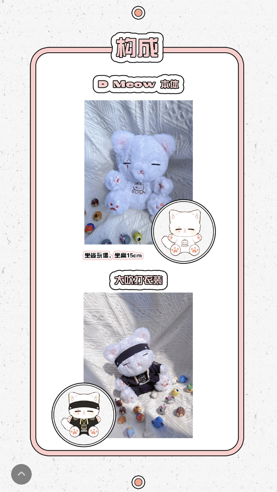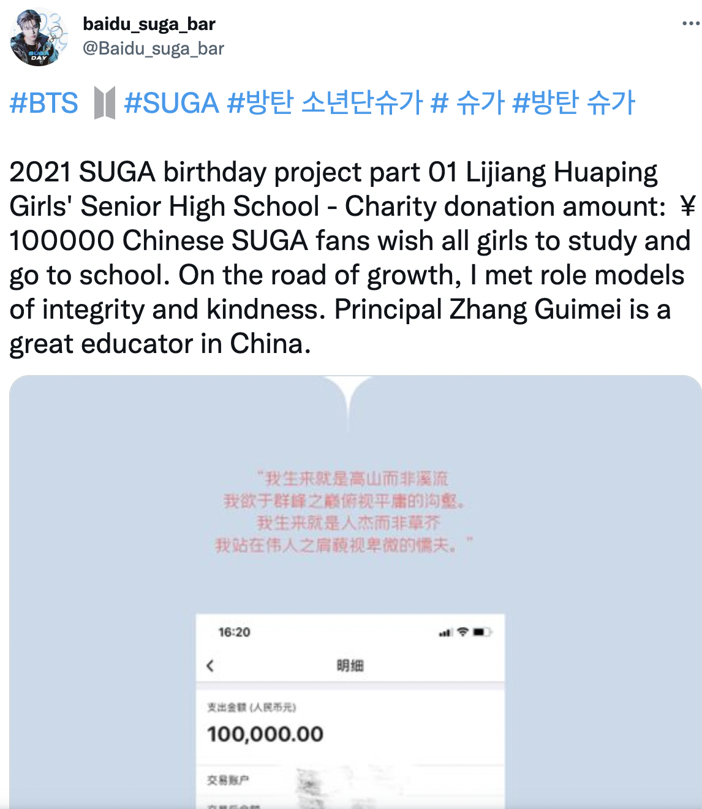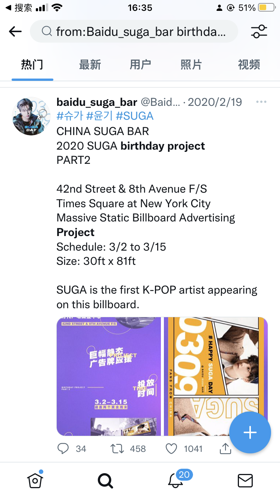